A405 2026 midterm solutions#
Link to a405_mid_2026_solution.ipynb
Question 1 Cooling problem (12 points)#
Use the tephigram labeled ``cooling problem’’ to calculate the following:
For air at 700 hPa with 7 g/kg of vapor (saturated) and 1 g/kg of liquid.
(4) Find: - The LCL of this air - The approximate temperature if it was brought adiabatically to a pressure of 1000 hPa.
(8) Suppose this air was cooled by 6 degrees C at a constant pressure of 700 hPa. Find:
The amount of liquid water condensed by the cooling (g/kg)
The new LCL, assuming no precipitation
The amount of energy \(\Delta q_{out}\) (J/kg) shed to the environment during the cooling.
Q1a answer#
LCL: 755 hPa
\(\theta\) = 303 K
Q1b answer#
condensed liquid water: 2.5 g/kg
new lcl: 914 hPa
cooling q: \(-1.2 \times 10^4\) J/kg
from a405.thermo.constants import constants as c
delta_T = -6 #K
delta_rv = -2.5*1.e-3 #kg/kg
delta_qout = c.cpd*delta_T + c.lv0*delta_rv
print(f"!!!!!!cooling total q = {delta_qout:.1e} J/kg")
!!!!!!cooling total q = -1.2e+04 J/kg
Question 1 cooling code#
from a405.soundings.wyominglib import read_soundings
from a405.skewT.skewlib import makeSkewDry
from a405.thermo.thermlib import convertTempToSkew, find_lcl, find_thetaet, find_Td, tinvert_thetae
from a405.thermo.thermlib import find_rsat, find_theta, find_Tmoist
from a405.skewT.fullskew import makeSkewWet,find_corners,make_default_labels
import datetime
import pytz
import numpy as np
from matplotlib import pyplot as plt
hPa2pa = 100 # convert hPascals to Pascals
def label_fun():
"""
override the default rs labels with a tighter mesh
"""
from numpy import arange
#
# get the default labels
#
tempLabels,rsLabels, thetaLabels, thetaeLabels = make_default_labels()
#
# change the temperature and rs grids
#
tempLabels = range(-40, 50, 2)
rsLabels = [0.1, 0.25, 0.5, 1, 2, 3] + list(np.arange(4, 28, 1))
thetaeLabels = np.arange(295,335,3)
return tempLabels,rsLabels, thetaLabels, thetaeLabels
pa2hPa = 1.e-2
Find temperature at 700 hPa#
press_700 = 700e2
rv=7e-3
rl = 1.e-3
rt_cloud = rv + rl
#
# clouds is saturated, so temp= dewpoint
#
Td_700 = find_Td(rv,press_700)
temp_700 = Td_700
thetae_before = find_thetaet(Td_700, rt_cloud, temp_700,press_700)
print(f"{(temp_700 - c.Tc)=:0.1f} deg C")
(temp_700 - c.Tc)=3.4 deg C
Q1a Find the lcl with \(\theta\) prior to cooling#
Plot as a green diamond
help(find_rsat)
Help on function find_rsat in module a405.thermo.thermlib:
find_rsat(temp, press)
calculate the saturation mixing ratio (kg/kg) at (temp,press)
Parameters
---------
temp: float
temperature (K)
press: float
pressure (Pa)
Returns
-------
rsat: float
satruation mixing ratio (kg/kg)
Make the tephigram with original point#
find original LCL by going below cloud base to 900 hPa conserving \(\theta_e\)#
press_900 = 900.e2
Temp_900,rv_900,rl_900=tinvert_thetae(thetae_before,rt_cloud,press_900)
# find lcl
Td_900 = find_Td(rt_cloud, press_900)
rsat_900 = find_rsat(Td_900,press_900)
print(f"{(Td_900 - c.Tc)=:.1f},{rsat_900:.1e},{rt_cloud=}")
original_T_lcl, original_press_lcl = find_lcl(Td_900,Temp_900,press_900)
print(f"!!!!!!{original_press_lcl=:.1f}, {original_T_lcl - c.Tc=:.1f} deg C")
(Td_900 - c.Tc)=8.9,8.0e-03,rt_cloud=0.008
!!!!!!original_press_lcl=75537.4, original_T_lcl - c.Tc=6.4 deg C
# lcl=ax1.plot(xplot, press_lcl*pa2hPa, 'bd', markersize=14, markerfacecolor='g',
# label = "original lcl")
original_theta_lcl = find_theta(original_T_lcl,original_press_lcl)
print(f"!!!!!LCL potential temperature {original_theta_lcl:0.1f} K")
print(f"!!!!!LCL pressure {original_press_lcl*pa2hPa:0.1f} hPa")
!!!!!LCL potential temperature 302.8 K
!!!!!LCL pressure 755.4 hPa
Check that \(\theta_e\) hasn’t changed#
thetae_check= find_thetaet(Td_900, rt_cloud, Temp_900,press_900)
thetae_check, thetae_before
(np.float64(325.4053028098543), np.float64(325.405302809854))
now cool by 6 K#
new_temp = temp_700 - 6
thetae_after = find_thetaet(Td_700, rt_cloud, new_temp,press_700)
Temp_after,rv_after,rl_after=tinvert_thetae(thetae_after,rt_cloud,press_lcl)
print(f"{(thetae_before - thetae_after)=} K")
print(f"!!!!!New rv {rv_after*1.e3:0.1f} g/kg")
print(f"!!!!!rv_after, rv_change: {rv_after*1.e3:0.1f} g/kg, {(rv_after - rv)*1.e3:0.1f} g/kg")
xplot = xplot=convertTempToSkew(Temp_after - c.Tc,press_700*pa2hPa,skew)
cooled_parcel=ax1.plot(xplot, press_700*pa2hPa, 'bd', markersize=14, markerfacecolor='b',
label = "after 6K cooling")
#
# add the LCL
#
xplot = xplot=convertTempToSkew(T_lcl - c.Tc,press_lcl*pa2hPa,skew)
lcl=ax1.plot(xplot, press_lcl*pa2hPa, 'bd', markersize=14, markerfacecolor='g',
label = "original lcl")
ax1.legend()
display(fig)
---------------------------------------------------------------------------
NameError Traceback (most recent call last)
Cell In[9], line 3
1 new_temp = temp_700 - 6
2 thetae_after = find_thetaet(Td_700, rt_cloud, new_temp,press_700)
----> 3 Temp_after,rv_after,rl_after=tinvert_thetae(thetae_after,rt_cloud,press_lcl)
4 print(f"{(thetae_before - thetae_after)=} K")
5 print(f"!!!!!New rv {rv_after*1.e3:0.1f} g/kg")
NameError: name 'press_lcl' is not defined
rv_after
---------------------------------------------------------------------------
NameError Traceback (most recent call last)
Cell In[10], line 1
----> 1 rv_after
NameError: name 'rv_after' is not defined
Find the new lcl#
Go down to the surface in case lcl is below 900
press_1000=1.e5 # Pa
Temp_1000,rv_1000,rl_1000=tinvert_thetae(thetae_after,rt_cloud,press_1000)
Td_1000 = find_Td(rt_cloud, press_1000)
T_lcl, press_lcl = find_lcl(Td_1000,Temp_1000,press_1000)
print(f"!!!!!!!!new lcl temperature, pressure {T_lcl:.1f}, {press_lcl:.1f}")
xplot = xplot=convertTempToSkew(T_lcl - c.Tc,press_lcl*pa2hPa,skew)
lcl=ax1.plot(xplot, press_lcl*pa2hPa, 'cd', markersize=14, markerfacecolor='c',
label = "new lcl")
ax1.legend()
fig.savefig("images/question1_answer.png")
display(fig)
!!!!!!!!new lcl temperature, pressure 282.3, 91406.6
---------------------------------------------------------------------------
NameError Traceback (most recent call last)
Cell In[11], line 6
4 T_lcl, press_lcl = find_lcl(Td_1000,Temp_1000,press_1000)
5 print(f"!!!!!!!!new lcl temperature, pressure {T_lcl:.1f}, {press_lcl:.1f}")
----> 6 xplot = xplot=convertTempToSkew(T_lcl - c.Tc,press_lcl*pa2hPa,skew)
7 lcl=ax1.plot(xplot, press_lcl*pa2hPa, 'cd', markersize=14, markerfacecolor='c',
8 label = "new lcl")
9 ax1.legend()
NameError: name 'skew' is not defined
Question 2 Thermodynamics (10)#
i (6) Starting with the definition of the enthalpy of a mixture of air and water (\(H=m_d h_d + m_v h_v + m_l h_l\)), derive the definition for the enthalpy of the mixture
and the equation for moist static energy
and show that \(s_v\) is conserved under adiabatic ascent. Be sure to state any assumptions/approximations.
ii (4) Using your work from (i) and any other equation on the equation sheet, derive equation
stating any approximations you need to make
Q2a answer#
Doring phase change, temperature is constant, so \(h_v\) and \(h_l\) don’t change.
Also, total water is conserved, so
Take the differential of (23) and use (24)
Finally add the definition of the latent heat and divide both sides by \(m_d\)
To connect this with \(s_v\), use the first law together with the assumption of hydrostatic balance:
For adiabatic processes, \(q=0\) so \(ds_v=0\) and \(s_v\) won’t change.
Q2b answer#
Divide the first law form from (25) by temperature to get the entropy:
Use the equation of state (3):
and the definition of potential temperature (11):
to get:
Assuming saturation, and making the approximation from worksheet 7 that:
Gives equation (16)
Question 3 Mixing (12)#
Surface air at 1000 hPa with a temperature of 20 deg C and a dewpoint of 16 deg C is lifted adiabatically to 800 hPa, where it mixes 30% with air that has a \(\theta_e\) of 307 K and a mixing ratio of 4 g/kg. Use the tephigram labeled ``mixing problem’’ to find:
The \(\theta_e\) and LCL of the of the surface air
The \(\theta_e\), \(r_v\) and \(r_l\) of the mixture
The LCL of the mixture
The temperature of the mixture at 800 hPa
Is the mixture negatively, positively, or neutrally buoyant with its surrounding environment? Explain.
Question 3 answer#
\(\theta_e\), \(r_v\) and LCL of surface air: \(\theta_e\) = 324 K, \(r_v\)=11.5 g/kg LCL = 942 hPa
\(\theta_e\), \(r_v\) and LCL of environment air: 307 K, 4 g/kg, LCL = 719 hPa
\(\theta_e\), \(r_v\) and LCL of mixture: 318.9 K, 9.2 g/kg, 892 hPa
The mixture is about 2 degrees cooler than unmixed cloud, and about 2 degrees warmer than the pure environment. So if it’s surrounded by unmixed cloud it will sink, or environment and it will ascend, but more slowly than unmixed cloud.
thetae_cloud = 324
thetae_env = 307
rv_cloud = 11.5e-3
rv_env = 4.e-3
thetae_mix = 0.7*thetae_cloud + 0.3*thetae_env
rv_mix = 0.7*rv_cloud + 0.3*rv_env
print(f"!!!!!!!{thetae_mix=:.1f} K, {rv_mix=:.1e} kg/kg")
!!!!!!!thetae_mix=318.9 K, rv_mix=9.2e-03 kg/kg
Question 3 code#
get \(\theta_e\) of the surface air#
temp_1000 = 20 + c.Tc
press_1000 = 1.e5
Td_1000 = 16 + c.Tc
rt_cloud = find_rsat(Td_1000,press_1000)
thetae_cloud = find_thetaet(Td_1000, rt_cloud, temp_1000,press_1000)
T_lcl, press_lcl = find_lcl(Td_1000,temp_1000,press_1000)
print(f"!!!!!!!thetae: {thetae_cloud:0.1f} K, r_T {rt_cloud*1.e3:0.1f} g/kg, lcl_press {press_lcl:0.1f} Pa")
!!!!!!!thetae: 324.4 K, r_T 11.5 g/kg, lcl_press 94207.8 Pa
Plot T, Td and the lcl#
fig,ax2 =plt.subplots(1,1,figsize=(11,11))
skew = 35
corners=[5,21]
ax2, skew = makeSkewWet(ax2, corners=corners, skew=skew,label_fun=label_fun)
ax2.set_title('mixing problem')
xcorners=find_corners(corners,skew=skew)
ax2.set(xlim=xcorners,ylim=[1005,700])
xplot=convertTempToSkew(temp_1000 - c.Tc,press_1000*pa2hPa,skew)
ax2.plot(xplot, press_1000*pa2hPa, 'gd', markersize=14, markerfacecolor='g',
label = "temp_sfc")
xplot=convertTempToSkew(Td_1000 - c.Tc,press_1000*pa2hPa,skew)
ax2.plot(xplot, press_1000*pa2hPa,'bd', markersize=14, markerfacecolor='b',
label = "dewpoint_sfc")
xplot=convertTempToSkew(T_lcl - c.Tc,press_lcl*pa2hPa,skew)
ax2.plot(xplot, press_lcl*pa2hPa,'kd', markersize=14, markerfacecolor='k',
label = "lcl_cloud");
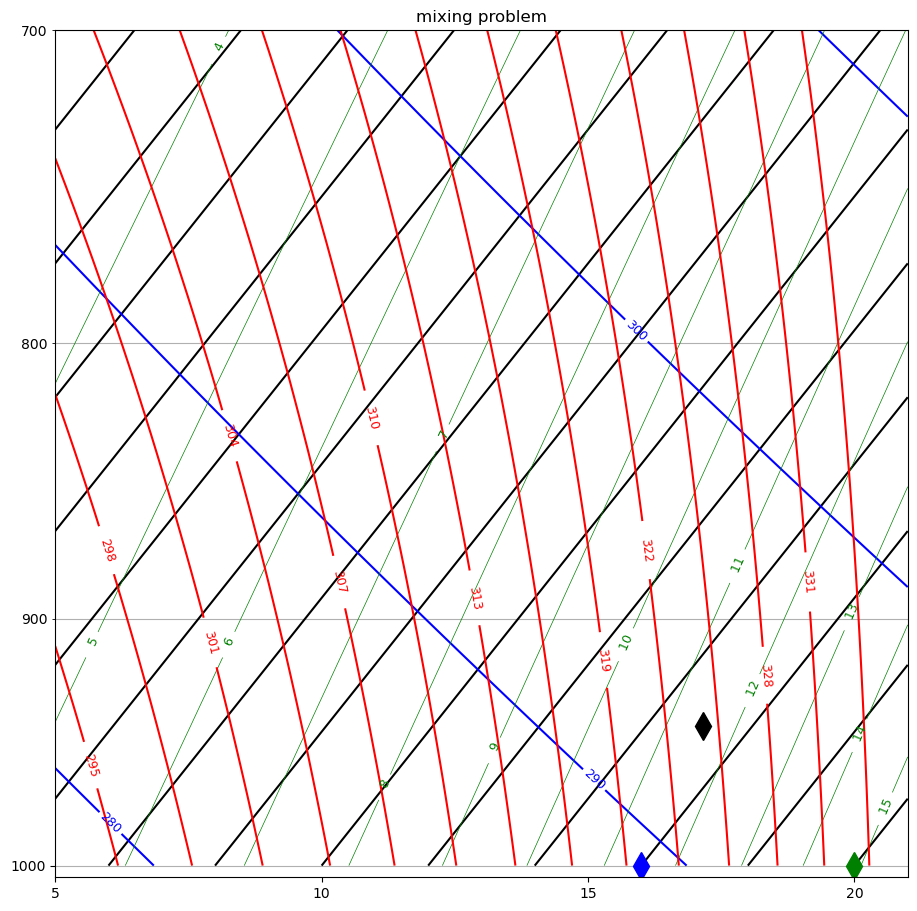
Lift to 800#
press_800 = 8.e4 #Pa
Temp_800,rv_800,rl_800=tinvert_thetae(thetae_cloud,rt_cloud,press_800)
xplot=convertTempToSkew(Temp_800 - c.Tc,press_800*pa2hPa,skew)
ax2.plot(xplot, press_800*pa2hPa,'rd', markersize=14, markerfacecolor='r',
label = "cloud_800");
display(fig)
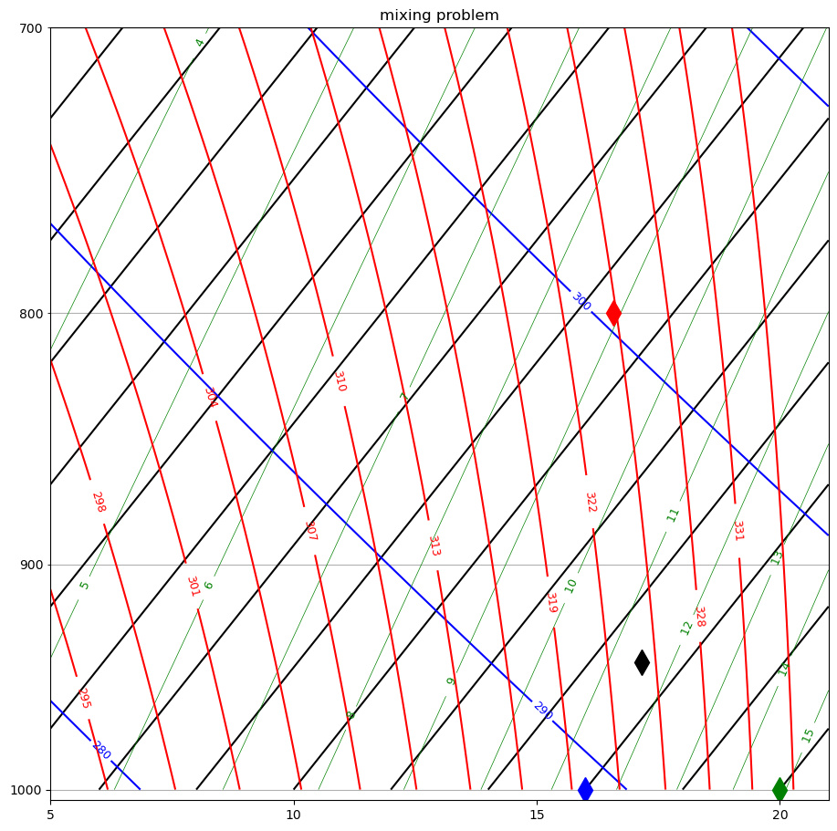
add the environment#
rt_env = 4.e-3
thetae_env = 307.
Td_env = find_Td(rt_env, press_800)
Temp_env,rv_env,rl_env=tinvert_thetae(thetae_env,rt_env,press_800)
T_lclenv, press_lclenv = find_lcl(Td_env,Temp_env,press_800)
print(f"!!!!{press_lclenv=:.1f} Pa")
!!!!press_lclenv=71900.2 Pa
xplot=convertTempToSkew(Temp_env - c.Tc,press_800*pa2hPa,skew)
ax2.plot(xplot, press_800*pa2hPa,'gs', markersize=14, markerfacecolor='g',
label = "temp_env")
xplot=convertTempToSkew(Td_env - c.Tc,press_800*pa2hPa,skew)
ax2.plot(xplot, press_800*pa2hPa,'bs', markersize=14, markerfacecolor='b',
label = "Td_env")
xplot=convertTempToSkew(T_lclenv - c.Tc,press_lclenv*pa2hPa,skew)
ax2.plot(xplot, press_lclenv*pa2hPa,'ks', markersize=14, markerfacecolor='k',
label = "lcl_env")
ax2.legend()
display(fig)
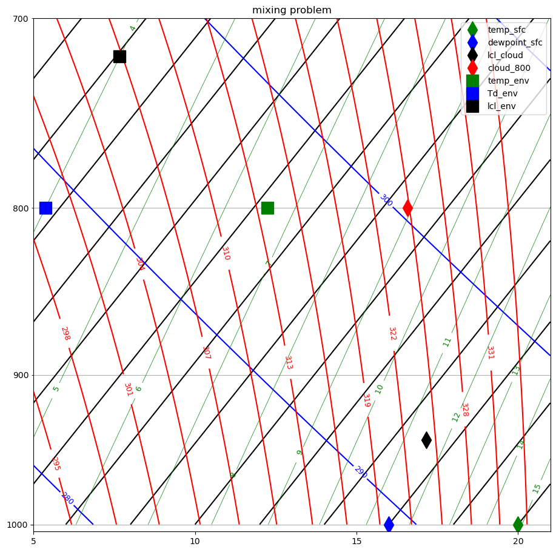
add the mixture#
thetae_mix = 0.3*thetae_env + 0.7*thetae_cloud
rt_mix = 0.3*rt_env + 0.7*rt_cloud
Temp_mix,rv_mix,rl_mix=tinvert_thetae(thetae_mix,rt_mix,press_800)
Temp_1000,rv_1000,rl_1000=tinvert_thetae(thetae_mix,rt_mix,press_1000)
print(rv_1000)
Td_1000 = find_Td(rv_1000,press_1000)
print(Td_1000 - c.Tc)
T_lclmix, press_lclmix = find_lcl(Td_1000,Temp_1000,press_1000)
print(f"{thetae_mix=:0.1f} K, {rt_mix=:0.4f} kg/kg")
print(f"{Temp_mix - c.Tc=:0.1f} K, {rv_mix=:0.4f} kg/kg, {rl_mix=:0.4f} kg/kg")
print(f"{press_lclmix=:0.1f} Pa")
0.009257312690262086
12.68914036852982
thetae_mix=319.2 K, rt_mix=0.0093 kg/kg
Temp_mix - c.Tc=6.7 K, rv_mix=0.0077 kg/kg, rl_mix=0.0015 kg/kg
press_lclmix=88906.8 Pa
xplot=convertTempToSkew(Temp_mix - c.Tc,press_800*pa2hPa,skew)
ax2.plot(xplot, press_800*pa2hPa,'co', markersize=14, markerfacecolor='c',
label = "mixture")
xplot=convertTempToSkew(T_lclmix - c.Tc,press_lclmix*pa2hPa,skew)
ax2.plot(xplot, press_lclmix*pa2hPa,'cs', markersize=14, markerfacecolor='c',
label = "mixture lcl")
ax2.legend()
fig.savefig("images/question3_answer.png")
display(fig)
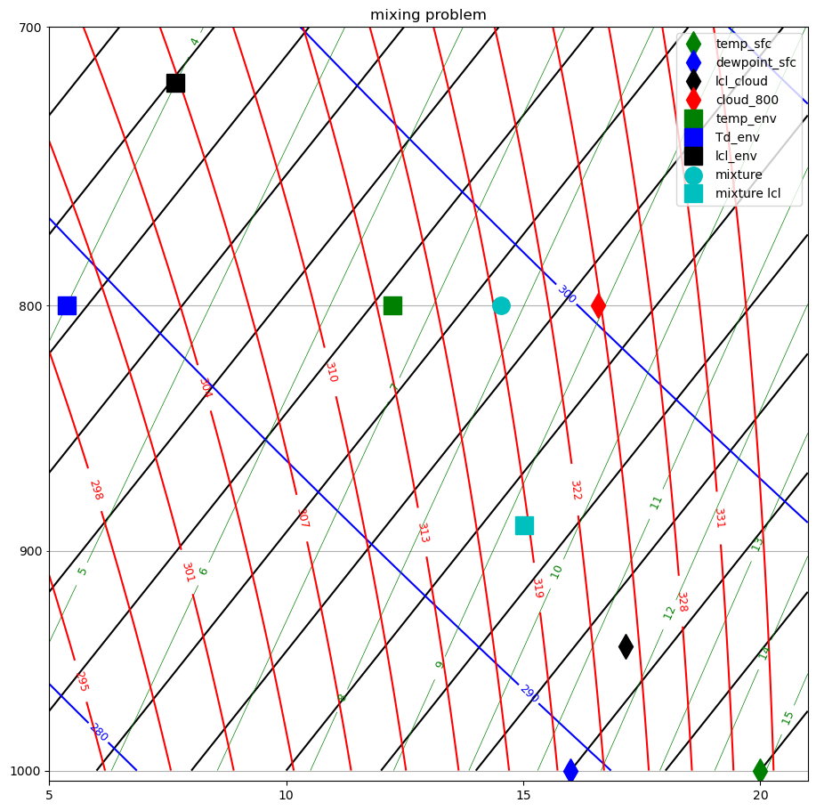
Question 4 (15) Layer convection#
Use the tephigram labeled ``layer problem’’ to answer the following:
Find the LCL for the top and bottom of the layer and label them on the figure.
Draw the \(\theta_e\) profile between 900-800 hPa
Explain your reasoning as you answer the following. Is the layer:
Absolutely stable?
Conditionally unstable?
Convectively unstable?
What is the wet bulb potential temperature (\(\theta_w\)) for air at 900 hPa? (also show on tephigram).
Suppose the layer is lifted until the top is at 715 hPa and the bottom is a 815 hPa. Draw the new (T,Td) sounding. Has cloud formed? In which part of the layer? Is there convective overturning? Why or why not?
Question 4 answer#
For bottom, LCL = 834 hPa
For top, LCL = 705 hPa
All points are absolutely stable, since \(d\theta/dz\) > 0 at all heights
All points are conditionally stable, since $d\theta_e/dz > 0 at all heights
The layer is convectively stable, since \(d\theta_e/dz\) > 0 for the whole layer
\(\theta_w\) is 19.7 deg C, see bottom of Add the top and bottom LCL values
To lift layer to 815-715 hPa, see Lift base to 815, top to 715. Cloud has formed in the bottom half of the layer. There is no convective overturning, because the temperature is increasing with height.
Question 4 code#
Define functions to plot and lift soundings#
def makePlot(ax,Temp=None,Tdew=None,Tpseudo=None,press=None,
Tlcl=None,plcl=None,botLabel=' ',
topLabel=' ',skew=35):
"""
Draw a tephigram of a convectively stable layer with
Temp, Tdew, Tpseudo soundings, as well as the LCL of the top
and the bottom of the layer
All temperatures in K, all pressure in hPa
"""
xplot = convertTempToSkew(Tlcl[0] - c.Tc, plcl[0] * pa2hPa, skew)
bot, = ax.plot(xplot, plcl[0] * pa2hPa, 'ro', markersize=12, markerfacecolor='r',label=botLabel)
xplot = convertTempToSkew(Tlcl[-1] - c.Tc, plcl[-1] * pa2hPa, skew)
#pdb.set_trace()
top, = ax.plot(xplot, plcl[-1] * pa2hPa,'bd', markersize=12,
markerfacecolor='b',label = topLabel)
xplot = convertTempToSkew(Tpseudo - c.Tc, press, skew)
thetaEhandle, = ax.plot(xplot, press, 'c-', linewidth=2.5,label=r'$\theta_e$')
xplot1 = convertTempToSkew(Temp - c.Tc, press, skew)
Thandle, = ax.plot(xplot1, press, 'k-', linewidth=2.5,label='Temp (deg C)')
xplot2 = convertTempToSkew(Tdew - c.Tc, press, skew)
TdHandle, = ax.plot(xplot2, press, 'b--', linewidth=2.5,label='Dewpoint (deg C)')
ax.legend(loc='best',numpoints=1)
base=press[0]
title_string = f'convectively stable sounding: base at {base} hPa'
ax.set_title(title_string)
return ax
def lift_sounding(rTotal,theThetae,press):
'''
this function lifts a thetae sounding (rTotal,the_Thetae)
to pressure level press
Parameters
----------
rTotal in kg/kg, theThetae in K press in hPa
Returns
-------
temp,dewpoint and Tspeudo soundings for an rT,thetae sounding at pressure levels press
'''
Temp_rv_rl = apply(theThetae,rTotal,press*hPa2pa,the_fun=tinvert_thetae)
Temp = np.array([item[0] for item in Temp_rv_rl])
rv = np.array([item[1] for item in Temp_rv_rl])
Tdew = np.array(apply(rv,press*hPa2pa,the_fun=find_Td))
Tpseudo = np.array(apply(theThetae,press*hPa2pa,the_fun=find_Tmoist))
return Tdew,Temp,Tpseudo
construct a 100 hPa thick layer with a convectively stable sounding#
Ttop = 20.61
Tbot = 19.04
Tdewtop = 12.16
Tdewbot = 13.92
Pbot = 900.
Ptop = 800.
#calculate the temperature and dewpoint sounding
#assuming linear profiles
slope = (Ttop - Tbot) / (Ptop - Pbot)
press0 = np.arange(Pbot, Ptop - 10, -10)
Temp_sound = (Tbot + slope * (press0 - Pbot))
slope = (Tdewtop - Tdewbot) / (Ptop - Pbot)
Tdew_sound = (Tdewbot + slope * (press0 - Pbot))
Tdew_soundK = Tdew_sound + c.Tc
Temp_soundK = Temp_sound + c.Tc
def apply(*args,the_fun=None):
"""
apply a function to a list of arguments, one row at a time
the individual arguments are vectors of the same length, and
are zipped together to form an array of n rows
Parameters
----------
*args: vectors
args is a list of vectors like Temperature T, total water rT, pressure p
the_fun: function that takes an individual set of numbers: i.e. the_fun(T,rT,p)
Returns:
out: ndarray
the output of operating on each row with the_fun
"""
row_wise = zip(*args)
out=[the_fun(*row) for row in row_wise]
out = np.asarray(out)
return out
#
#figure 3: plot the T,Tdew profile only
#
fig,ax3 =plt.subplots(1,1,figsize=(11,11))
skew=35
corners=[10,30]
ax3, skew = makeSkewWet(ax3,corners=corners,skew=skew)
#zoom the axis to focus on layer
xcorners=find_corners(corners,skew=skew)
ax3.set(xlim=xcorners,ylim=[1000, 600])
xplot1 = convertTempToSkew(Temp_sound, press0, skew)
#plot() returns a list of handles for each line plotted
Thandle, = ax3.plot(xplot1, press0, 'k-', linewidth=2.5,label='Temp (deg C)')
xplot2 = convertTempToSkew(Tdew_sound, press0, skew)
TdHandle, = ax3.plot(xplot2, press0, 'b--', linewidth=2.5,label='Dewpoint (deg C)')
ax3.set_title('convectively stable sounding: base at 900 hPa')
ax3.legend(numpoints=1,loc='best');
cs=convertTempToSkew
#fig.savefig('initial_sound.png')
#fig.savefig('initial_sound.pdf')
ax3.plot(cs(Temp_sound[:-1],press0[:-1],skew),press0[:-1],'bo',markersize=15);
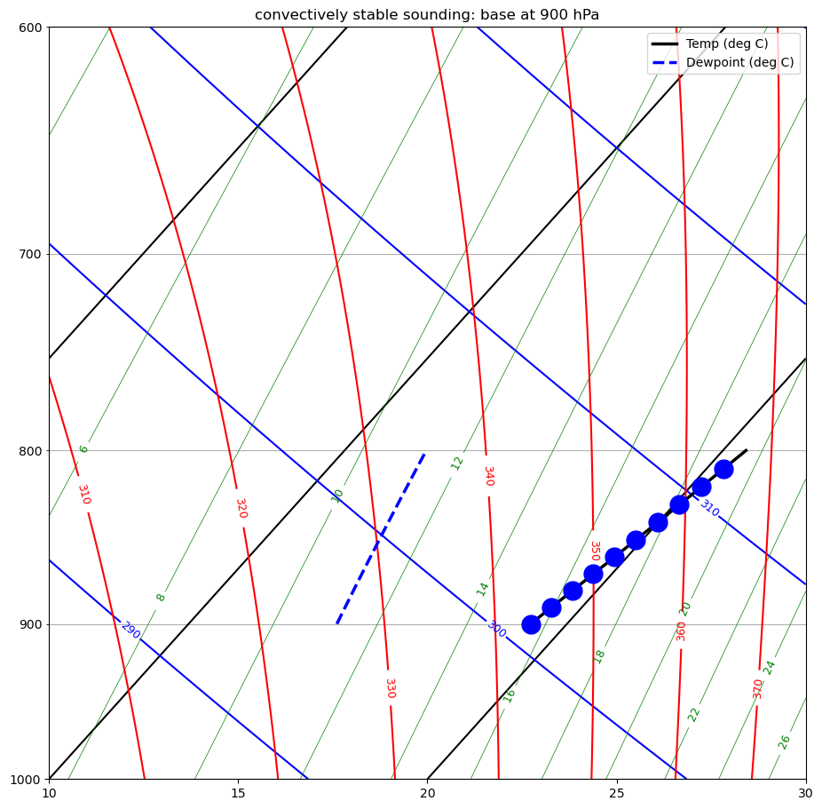
Add the top and bottom LCL values#
#
# figure 2, add thetae sounding and LCL for layer top and bottom
#
#
# calculate the rT_sound,thetae_sound sounding from the original dewpoint and temperture
#
rT_sound = apply(Tdew_soundK, (press0*hPa2pa),the_fun=find_rsat)
Tlcl_plcl = apply(Tdew_soundK, Temp_soundK, (press0*hPa2pa),the_fun=find_lcl)
Tlcl = np.array([item[0] for item in Tlcl_plcl])
plcl = np.array([item[1] for item in Tlcl_plcl])
print(f"!!!!!!Tlcl, Plcl for layer points \n{Tlcl_plcl}")
thetae_sound = apply(Tdew_soundK,rT_sound,Temp_soundK, (press0*hPa2pa),the_fun=find_thetaet)
Tpseudo_sound = apply(thetae_sound, press0*hPa2pa, the_fun=find_Tmoist)
thetae_bot = thetae_sound[0]
print(f"\n!!!!!!theta_e for layer bottom is {thetae_bot:.1f} K")
#
# move down constnt theta_e to 1000 hPa
#
wet_bulb_temp = find_Tmoist(thetae_bot,1.e5) - c.Tc
print(f"Wet bulb potential temperature {wet_bulb_temp:.1f} degC")
fig, ax4 = plt.subplots(1, 1, figsize=(10, 10))
ax4, skew = makeSkewWet(ax4,corners=corners,skew=skew)
fig_dict=dict(press=press0,Tpseudo=Tpseudo_sound,Temp=Temp_soundK,
Tdew=Tdew_soundK,
Tlcl=Tlcl,plcl=plcl,botLabel='LCL bot (834 hPa)',
topLabel='LCL top (705 hPa)',skew=skew)
xcorners=find_corners(corners,skew=skew)
ax4.set(xlim=xcorners,ylim=[1000, 600])
ax4 = makePlot(ax4,**fig_dict)
sfc_pres = 1000
xplot = convertTempToSkew(wet_bulb_temp, sfc_pres, skew)
ax4.plot(xplot,sfc_pres-3,'cd',markersize=14)
!!!!!!Tlcl, Plcl for layer points
[[ 285.89140429 83366.39549235]
[ 285.64171874 82032.45576411]
[ 285.39229882 80709.79719213]
[ 285.14314395 79398.33509766]
[ 284.89425353 78097.98543897]
[ 284.64562696 76808.6648063 ]
[ 284.39726368 75530.29041688]
[ 284.14916308 74262.78010986]
[ 283.90132458 73006.05234147]
[ 283.6537476 71760.02618011]
[ 283.40643157 70524.62130145]]
!!!!!!theta_e for layer bottom is 332.0 K
Wet bulb potential temperature 19.7 degC
[<matplotlib.lines.Line2D at 0x152f1d400>]
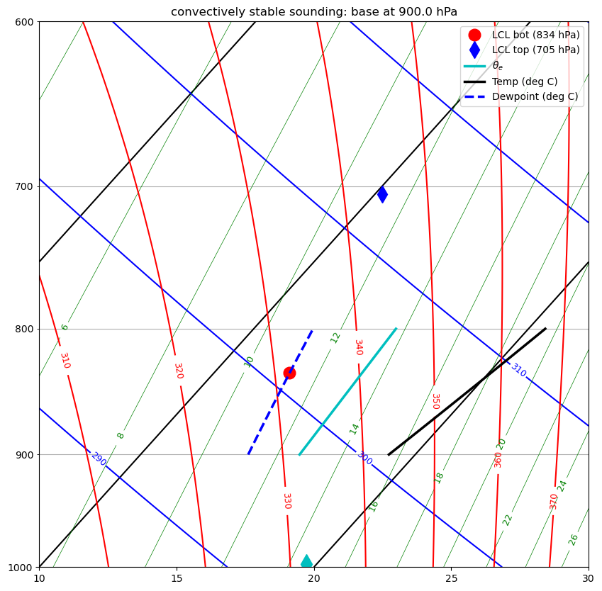
Now lift the layer gradually#
Lift by 50 hPa#
# #figure 3: lift cloud base by 50 hPa to 850 hPa
pressM50 = press0 - 50.
TdewM50, TempM50, TpseudoM50 = lift_sounding(rT_sound,thetae_sound,pressM50)
fig_dict.update(dict(press=pressM50,Temp=TempM50,Tdew=TdewM50,Tpseudo=TpseudoM50))
fig, ax5 = plt.subplots(1, 1, figsize=(10, 10))
ax5, skew = makeSkewWet(ax5,corners=corners,skew=skew)
ax5 = makePlot(ax5,**fig_dict)
ax5.set(xlim=xcorners,ylim=[1000, 600])
[(-231.7714347643748, -211.7714347643748), (1000, 600)]
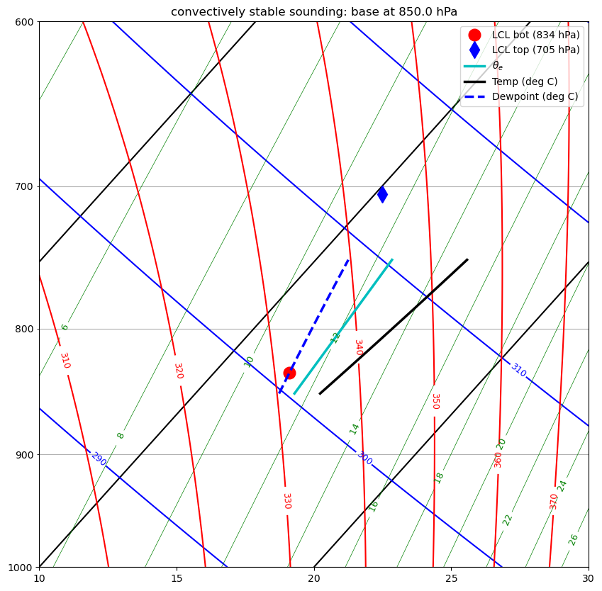
Lift to bottom LCL#
#
# figure 4 -- lift by 14.7 hPa to 835.3
#
pressM65 = pressM50 - 14.7
TdewM65, TempM65, TpseudoM65 = lift_sounding(rT_sound,thetae_sound,pressM65)
fig_dict.update(dict(press=pressM65,Temp=TempM65,Tdew=TdewM65,Tpseudo=TpseudoM65))
fig, ax6 = plt.subplots(1, 1, figsize=(10, 10))
ax6, skew = makeSkewWet(ax6,corners=corners,skew=skew)
ax6 = makePlot(ax6,**fig_dict)
ax6.set(xlim=xcorners,ylim=[1000, 600]);
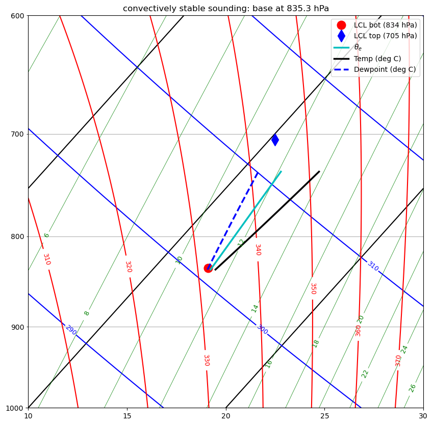
Lift base to 815, top to 715#
#
# figure 5 -- lift so base is at 815
#
pressM75 = pressM65 - 20.3
TdewM75, TempM75, TpseudoM75 = lift_sounding(rT_sound,thetae_sound,pressM75)
fig_dict.update(dict(press=pressM75,Temp=TempM75,Tdew=TdewM75,Tpseudo=TpseudoM75))
fig, ax7 = plt.subplots(1, 1, figsize=(10, 10))
ax7, skew = makeSkewWet(ax7,corners=corners,skew=skew)
ax7 = makePlot(ax7,**fig_dict)
ax7.set(xlim=xcorners,ylim=[1000, 600])
[(-231.7714347643748, -211.7714347643748), (1000, 600)]
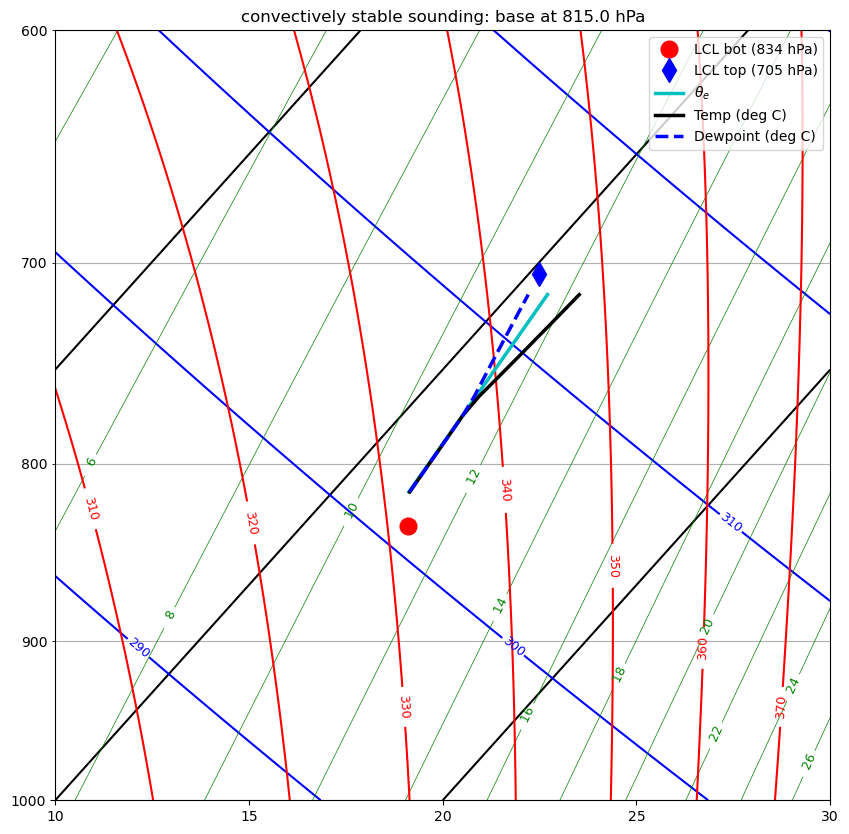
Lift past all LCLs#
#
# figure 6 -- lift by 25 hPa to 800 hPa
#
pressM100 = pressM75 - 25
TdewM100, TempM100, TpseudoM100 = lift_sounding(rT_sound,thetae_sound,pressM100)
fig_dict.update(dict(press=pressM100,Temp=TempM100,Tdew=TdewM100,Tpseudo=TpseudoM100))
fig, ax8 = plt.subplots(1, 1, figsize=(10, 10))
ax8, skew = makeSkewWet(ax8,corners=corners,skew=skew)
ax8 = makePlot(ax8,**fig_dict)
ax8.set(xlim=xcorners,ylim=[1000, 600])
[(-231.7714347643748, -211.7714347643748), (1000, 600)]
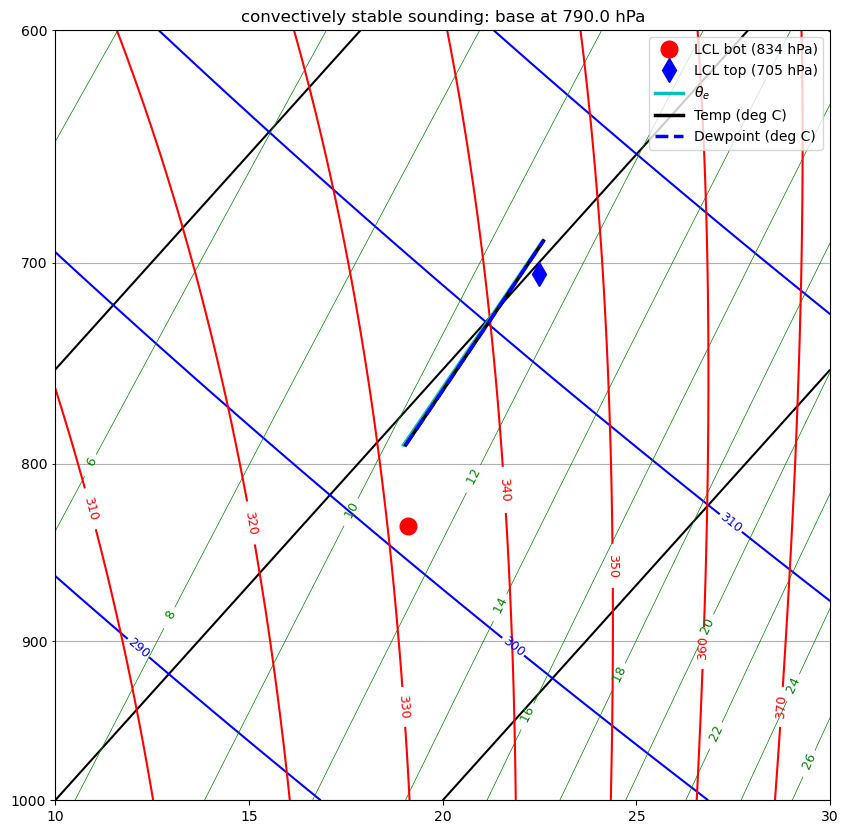
#
# figure 7 -- lift by 32.25 to 768 hPa
#
pressM132 = pressM100 - 32.25
TdewM132, TempM132, TpseudoM132 = lift_sounding(rT_sound,thetae_sound,pressM132)
fig_dict.update(dict(press=pressM132,Temp=TempM132,Tdew=TdewM132,Tpseudo=TpseudoM132))
fig, ax9 = plt.subplots(1, 1, figsize=(10, 10))
ax9, skew = makeSkewWet(ax9,corners=corners,skew=skew)
ax9 = makePlot(ax9,**fig_dict)
ax9.set(xlim=xcorners,ylim=[1000, 600])
[(-231.7714347643748, -211.7714347643748), (1000, 600)]
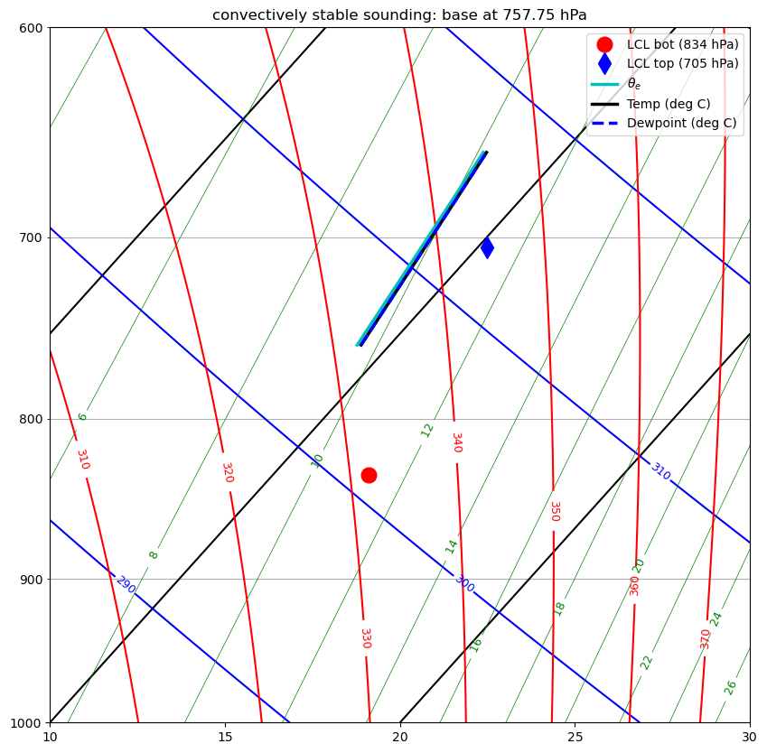